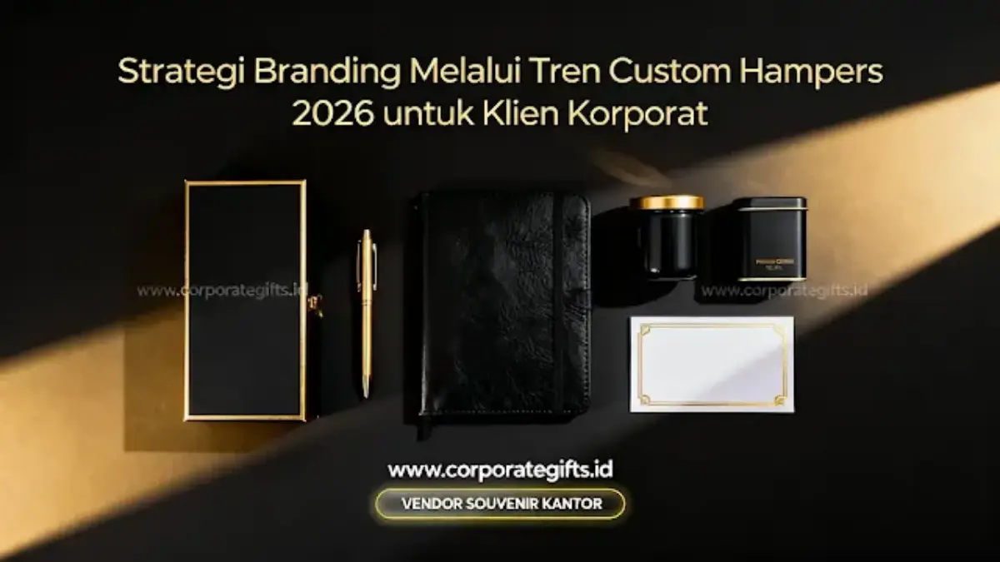

Corporate Gifts ID - Strategi branding custom hampers 2026 untuk klien korporat adalah metode pemanfaatan paket cinderamata berlogo sebagai representasi nilai dan citra perusahaan lewat empat pilar terpadu: mengutamakan material fungsional ramah lingkungan, mempersonalisasi isi bingkisan berdasarkan segmentasi mitra, merancang kemasan kotak yang bercerita (storytelling packaging), serta mengeksekusi pengadaan melalui vendor souvenir terpercaya setidaknya 3 hingga 4 bulan sebelum hari pembagian.
Dinamika dunia usaha modern menuntut perusahaan untuk terus memperbarui pendekatan diplomasi relasi bisnis. Paket hampers akhir tahun, parcel hari raya, maupun gift set apresiasi mitra tidak lagi dipandang sebagai sekadar formalitas tahunan yang kaku. Sebaliknya, custom hampers telah berevolusi menjadi instrumen komunikasi pemasaran berdaya ungkit tinggi yang merekatkan loyalitas pemangku kepentingan kunci.
Memberikan kalender dinding generik atau pulpen murah dengan tempelan stiker logo sudah usang. Di tahun 2026, para eksekutif dan mitra strategis menilai kredibilitas sebuah entitas bisnis dari kedalaman makna, kegunaan nyata, serta nilai etika keberlanjutan yang terpancar dari bingkisan yang mereka terima di meja kerja mereka.
Poin Kunci Strategi Branding Hampers Korporat 2026:
- Evolusi Meaningful Gifting: Fokus bergeser dari kemewahan hampa tanpa fungsi menuju cinderamata yang memiliki faedah jangka panjang dan relevan dengan gaya hidup modern.
- Standar ESG & Sustainability: Penggunaan material daur ulang, serat bambu, dan zero-waste packaging merefleksikan tanggung jawab sosial lingkungan korporasi.
- Personalisasi Berbasis Data: Membagi kurasi isi ke dalam tingkatan tier (VIP, Manajerial, Rekanan) untuk melipatgandakan ikatan emosional dan brand recall.
- Keunggulan Early Bird: Memulai proses perencanaan 3-4 bulan lebih awal mengunci harga material terbaik dan memastikan presisi quality control tanpa kepanikan logistik.
Tren Custom Hampers 2026: Dari Souvenir Menjadi Alat Branding
Memasuki tahun 2026, lanskap corporate gifting menegaskan prinsip bahwa penerima cinderamata, khususnya generasi pemimpin muda milenial dan jajaran direksi, lebih peka terhadap nilai etis dan kepedulian manusiawi. Hadiah korporat yang dirancang dengan cermat bertindak layaknya duta bisu yang mengomunikasikan visi, budaya kerja, dan standar mutu perusahaan pengirimnya.
Ketika sebuah paket bingkisan mampu menghadirkan pengalaman membuka kotak (unboxing experience) yang mengesankan, penerima secara sukarela akan membagikan momen tersebut ke jejaring profesional seperti LinkedIn atau Instagram. Dampak publikasi organik ini melipatgandakan reputasi brand Anda melampaui investasi biaya yang dikeluarkan.
3 Pilar Tren Utama: Sustainability, Wellness, dan Experience
Terdapat tiga tren sentral yang wajib diakomodasi dalam perencanaan hampers perusahaan tahun 2026:
1. Sustainability: Hampers Ramah Lingkungan Berstandar ESG
Isu kelestarian alam telah menjadi kriteria penilaian formal dalam tata kelola perusahaan modern. Memberikan hampers yang dipenuhi kemasan plastik sekali pakai atau styrofoam berpotensi merusak reputasi citra perusahaan.
Kombinasi produk berbahan dasar ramah lingkungan seperti tumbler stainless steel bersertifikasi BPA-free, buku jurnal kertas daur ulang berserat kopi, serta kartu ucapan berbahan benih tanaman (seed paper) kini menjadi simbol kemajuan korporasi yang peduli masa depan bumi.
2. Wellness dan Produktivitas Kerja Fleksibel
Dominasi pola kerja hibrida (hybrid working) meningkatkan kebutuhan akan perlengkapan yang menyeimbangkan konsentrasi kerja dan kesehatan mental. Merchandise kantor eksklusif bertema wellness, seperti diffuser aromaterapi aromatik, bantalan leher memory foam, dan set teh herbal artisan, mengirimkan sinyal perhatian tulus bahwa perusahaan peduli terhadap kenyamanan hidup mitra kerjanya.
3. Experience over Things: Menghubungkan Fisik dan Digital
Mengawinkan produk fisik dengan pengalaman interaktif terbukti memicu ingatan jangka panjang. Sebagai contoh, menyertakan set penyeduh kopi manual (manual brew) yang dilengkapi kartu ber-QR code menuju sesi video panduan barista eksklusif, atau notebook cerdas yang tersinkronisasi dengan aplikasi catatan digital di smartphone klien.
Personalisasi Hampers untuk Meningkatkan Retensi Klien
Efisiensi waktu dalam memesan 200 paket hadiah yang sama persis sering kali berbanding terbalik dengan dampak emosional yang dirasakan penerima. Personalisasi adalah kunci emas untuk memperkuat retensi klien jangka panjang:
Kurasi Berbasis Segmentasi Industri Mitra
Klasifikasikan mitra bisnis Anda ke dalam beberapa tingkatan (Tier VIP Direksi, Manajer Senior, dan Tim Operasional). Selanjutnya, sesuaikan isi cinderamata dengan karakter industri bisnis penerima:
- Mitra Industri Teknologi & Fintech: Tech-kit modern berisi powerbank nirkabel bersertifikasi MagSafe, converter port multifungsi, dan speaker bluetooth kayu walnut.
- Mitra Hukum, Keuangan & Konsultan: Leather goods elegan seperti card holder kulit asli berukir inisial nama, pulpen logam ballpoint tinta hitam doff, dan agenda kerja magnetik.

Seni packaging hardbox magnetik bertema earth-tone memperkuat nilai kemewahan sekaligus melindungi cinderamata korporat selama proses distribusi.
Storytelling Packaging: Kemasan yang Menuturkan Kisah
Kemasan luar adalah gerbang impresi pertama. Rancang kotak rigid hardbox berpenutup magnetik (magnetic closure) dengan palet warna korporat yang anggun tanpa terkesan mencolok. Sematkan kartu ucapan berteks personal yang ditandatangani langsung oleh jajaran direksi di sisi dalam tutup boks. Kotak kemasan yang kokoh dan estetik sering kali disimpan dan dialihfungsikan di meja kerja klien, memastikan paparan nama brand Anda bertahan berbulan-bulan.
Tabel Matriks Alokasi Budget & Kategori Custom Hampers 2026
Tabel berikut memudahkan divisi pengadaan korporat dalam memetakan proporsi anggaran tahunan dan karakteristik paket hampers:
| Kategori Alokasi | Porsi Anggaran | Rekomendasi Isi Cinderamata | Dampak Strategis Branding |
|---|---|---|---|
| Seasonal Gifts (Hari Raya & Akhir Tahun) | 50% | Tumbler SUS 316, diffuser aromaterapi, tableware artisan | Mempererat ikatan personal dan apresiasi kemitraan tahunan |
| Onboarding & Employee Recognition | 30% | Welcome kit, jaket hoodie custom, smart notebook, bantal ergonomis | Meningkatkan retensi talent dan memperkokoh employer branding |
| Client Relationship & VVIP Deals | 20% | Leather executive set, pen Parker grafir, plakat kayu kuningan | Mengukuhkan kesepakatan kontrak baru dan prestise direksi |
Cara Memilih Vendor Souvenir Terpercaya untuk Custom Hampers
Menemukan mitra produksi yang handal adalah faktor penentu suksesnya eksekusi strategi corporate gifting. Vendor yang profesional bertindak selayaknya konsultan kreatif yang memberi solusi, bukan sekadar calo perantara barang:
- Portofolio Resmi Terverifikasi: Pastikan vendor memiliki rekam jejak melayani instansi BUMN, kementerian, dan korporasi multinasional secara berkala.
- Layanan Visual Mockup 3D Gratis: Kemampuan memvisualisasikan peletakan logo pada produk dan kemasan sebelum proses cetak massal dimulai.
- Jaminan Quality Control Berlapis: Memiliki standar operasional ketat untuk menyaring barang cacat (defect), memastikan ketepatan fungsi elektronik, dan konsistensi warna cetakan.
- Legalitas Perpajakan Lengkap: Mampu menerbitkan faktur pajak resmi, dokumen purchase order (PO), serta kwitansi resmi guna kelancaran audit akuntansi perusahaan.
Perencanaan Budget dan Waktu Pemesanan (Early Bird Advantage)
Keterlambatan waktu pemesanan adalah jebakan klasik yang kerap memicu lonjakan biaya tak terduga akibat pengiriman kilat udara dan ketiadaan stok bahan baku premium.
Dengan memesan 3 hingga 4 bulan lebih awal sebelum masa serah terima hadiah (misalnya periode September-Oktober untuk hampers akhir tahun, atau 3 bulan sebelum Ramadhan untuk hampers Lebaran), perusahaan Anda menikmati tiga keuntungan strategis:
- Harga Material Lebih Ekonomis: Mengamankan bahan sebelum terjadinya lonjakan harga musiman (seasonal peak surcharge).
- Kebebasan Kustomisasi Total: Waktu yang longgar memungkinkan pembuatan kotak hardbox dengan dimensi khusus, emboss logo presisi, dan pemilihan varian warna kain yang unik.
- Manajemen Logistik yang Tenang: Paket dapat dikirimkan bertahap melalui armada logistik darat yang lebih aman dari risiko benturan dan hemat biaya pengiriman antar-kota.
Menyesuaikan Custom Hampers dengan Momen Spesial Perusahaan
Ketepatan momentum penyerahan melipatgandakan efek psikologis penerima bingkisan:
- Seasonal Gifting (Lebaran & Natal): Dominasi warna-warna bernuansa bumi (earth tones) seperti sage green, warm beige, terracotta, dan deep navy menghadirkan ketenangan visual yang elegan menggantikan warna mencolok.
- Tonggak Sejarah Perusahaan (Company Anniversary Milestone): Momen istimewa untuk merilis paket custom hampers edisi terbatas (limited edition). Sifat eksklusif produk bernomor seri ini membangkitkan rasa bangga bagi klien yang telah tumbuh bersama kesuksesan bisnis Anda.
Pertanyaan Seputar Custom Hampers 2026 (FAQ)
Kesimpulan dan Langkah Strategis
Menyiapkan cinderamata korporat bukan sekadar aktivitas belanja rutin tahunan, melainkan investasi strategis dalam membangun reputasi brand dan merawat hubungan bisnis bernilai tinggi. Melalui strategi branding custom hampers 2026 yang mengedepankan keberlanjutan, sentuhan personal, dan kemasan berkelas, perusahaan Anda tampil berbeda dan terdepan di mata seluruh pemangku kepentingan.

Ditulis oleh: Arinda Zakia
Senior Corporate Gifting SpecialistSpesialis strategi pengadaan corporate gift B2B dan konsultan kurasi hampers di CorporateGifts.ID. Berpengalaman merancang bingkisan korporat untuk puluhan institusi perbankan, BUMN, dan perusahaan multinasional di Indonesia.
Lihat Profil Lengkap & Panduan Lainnya